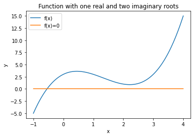
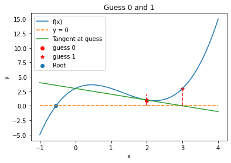
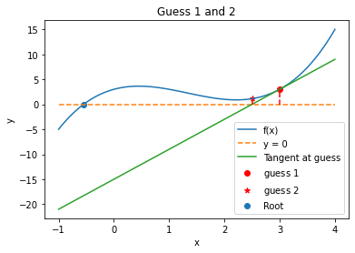
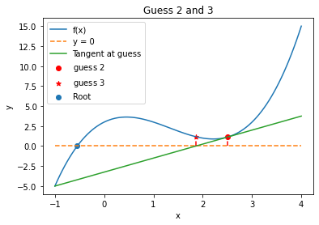
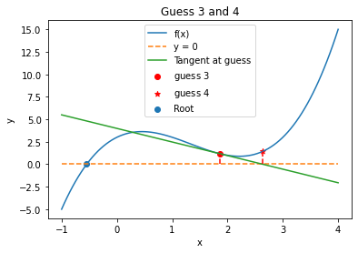

Convergence Analysis for Newton-Raphson Methods
Contents
6.4. Convergence Analysis for Newton-Raphson Methods#
6.4.1. Learning Objectives#
After studying this notebook, completing the activities, and asking questions in class, you should be able to:
Know what properties of a function and what user interactions can slow the convergence of Newton’s Method to the solution.
import numpy as np
import matplotlib.pyplot as plt
6.4.2. Examples of slow convergence#
Newton’s method, including its inexact variant, and the secant method can both converge slowly in the presence of the following:
Multiple roots or closely spaced roots
Complex roots
Bad initial guess (we saw this one already in the example in the Newton-Raphson Method notebook where the guesses went the wrong way at first)
6.4.3. Example 1: Multiple Roots, overlapping#
The function
has multiple roots at 0. Let’s see how it converges with Newton.
Notice I switch from \(c(x) = 0\) to \(f(x) = 0\). People use them interchangeably for canonical form.
First, run the Newton’s Method cell below that we used in the Newton-Raphson Method notebook:
def newton(f,fprime,x0,epsilon=1.0e-6, LOUD=False, max_iter=50):
"""Find the root of the function f(x) via Newton-Raphson method
Args:
f: the function, in canoncial form, we want to fix the root of [Python function]
fprime: the derivative of f [Python function]
x0: initial guess [float]
epsilon: tolerance [float]
LOUD: toggle on/off print statements [boolean]
max_iter: maximum number of iterations [int]
Returns:
estimate of root [float]
"""
assert callable(f), "Warning: 'f' should be a Python function"
assert callable(fprime), "Warning: 'fprime' should be a Python function"
assert type(x0) is float or type(x0) is int, "Warning: 'x0' should be a float or integer"
assert type(epsilon) is float, "Warning: 'eps' should be a float"
assert type(max_iter) is int, "Warning: 'max_iter' should be an integer"
assert max_iter >= 0, "Warning: 'max_iter' should be non-negative"
x = x0
if (LOUD):
print("x0 =",x0)
iterations = 0
converged = False
# Check if the residual is close enough to zero
while (not converged and iterations < max_iter):
if (LOUD):
print("x_",iterations+1,"=",x,"-",f(x),"/",
fprime(x),"=",x - f(x)/fprime(x))
# add general single-variable Newton's Method equation below
# Add your solution here
# check if converged
if np.fabs(f(x)) < epsilon:
converged = True
iterations += 1
print("It took",iterations,"iterations")
if not converged:
print("Warning: Not a solution. Maximum number of iterations exceeded.")
return x #return estimate of root
Now, let’s see how Newton’s Method reacts:
# define function
mult_root = lambda x: 1.0*x**7
# define first derivative
Dmult_root = lambda x: 7.0*x**6
# solve with Newton's method
root = newton(mult_root,Dmult_root,1.0,epsilon=1.0e-12,LOUD=True)
print("The root estimate is",root,"\nf(",root,") =",mult_root(root))
x0 = 1.0
x_ 1 = 1.0 - 1.0 / 7.0 = 0.8571428571428572
x_ 2 = 0.8571428571428572 - 0.33991667708911394 / 2.7759861962277634 = 0.7346938775510204
x_ 3 = 0.7346938775510204 - 0.11554334736330486 / 1.1008713373781547 = 0.6297376093294461
x_ 4 = 0.6297376093294461 - 0.03927511069548781 / 0.43657194805493627 = 0.5397750937109538
x_ 5 = 0.5397750937109538 - 0.013350265119917321 / 0.1731311002086809 = 0.4626643660379604
x_ 6 = 0.4626643660379604 - 0.004537977757820996 / 0.0686585063310034 = 0.3965694566039661
x_ 7 = 0.3965694566039661 - 0.0015425343201428206 / 0.027227866546925984 = 0.3399166770891138
x_ 8 = 0.3399166770891138 - 0.0005243331403988625 / 0.01079774024099974 = 0.29135715179066896
x_ 9 = 0.29135715179066896 - 0.00017822957877208114 / 0.004282053979924045 = 0.2497347015348591
x_ 10 = 0.2497347015348591 - 6.058320617519827e-05 / 0.0016981318199673287 = 0.2140583156013078
x_ 11 = 0.2140583156013078 - 2.0593242130478076e-05 / 0.0006734272130863475 = 0.18347855622969242
x_ 12 = 0.18347855622969242 - 6.9999864354836515e-06 / 0.00026706066395597614 = 0.15726733391116493
x_ 13 = 0.15726733391116493 - 2.3794121288184727e-06 / 0.00010590810238531585 = 0.13480057192385567
x_ 14 = 0.13480057192385567 - 8.088018642535101e-07 / 4.199991861290193e-05 = 0.11554334736330486
x_ 15 = 0.11554334736330486 - 2.749252421205337e-07 / 1.665588490172932e-05 = 0.09903715488283274
x_ 16 = 0.09903715488283274 - 9.345167474953186e-08 / 6.605215224736998e-06 = 0.08488898989957092
x_ 17 = 0.08488898989957092 - 3.176578274927349e-08 / 2.619426612426194e-06 = 0.07276199134248935
x_ 18 = 0.07276199134248935 - 1.0797719317267736e-08 / 1.0387845883038232e-06 = 0.06236742115070516
x_ 19 = 0.06236742115070516 - 3.670324870466584e-09 / 4.1195023971222183e-07 = 0.053457789557747284
x_ 20 = 0.053457789557747284 - 1.2476046338065332e-09 / 1.633668827105494e-07 = 0.045820962478069105
x_ 21 = 0.045820962478069105 - 4.240816214444976e-10 / 6.478631590360645e-08 = 0.0392751106954878
x_ 22 = 0.0392751106954878 - 1.44152415575977e-10 / 2.5692274093266084e-08 = 0.0336643805961324
x_ 23 = 0.0336643805961324 - 4.8999810096955105e-11 / 1.0188771176086686e-08 = 0.028855183368113487
x_ 24 = 0.028855183368113487 - 1.6655852626154586e-11 / 4.04055544876285e-09 = 0.024733014315525846
x_ 25 = 0.024733014315525846 - 5.661602078768455e-12 / 1.6023608786940773e-09 = 0.021199726556165012
x_ 26 = 0.021199726556165012 - 1.9244729656157925e-12 / 6.35447382947164e-10 = 0.018171194190998583
It took 26 iterations
The root estimate is 0.018171194190998583
f( 0.018171194190998583 ) = 6.541604556199529e-13
6.4.4. Example 2: Multiple roots, spaced far apart#
Now consider
which has multiple roots that are spaced far apart. We’ll see Newton’s method converge fast in this case.
# define function
mult_root = lambda x: np.sin(x)
# define derivative
Dmult_root = lambda x: np.cos(x)
# call Newton's method
root = newton(mult_root,Dmult_root,1.0,LOUD=True, epsilon=1e-12)
print("The root estimate is",root,"\nf(",root,") =",mult_root(root))
x0 = 1.0
x_ 1 = 1.0 - 0.8414709848078965 / 0.5403023058681398 = -0.5574077246549021
x_ 2 = -0.5574077246549021 - -0.5289880970896319 / 0.8486292436261492 = 0.06593645192484066
x_ 3 = 0.06593645192484066 - 0.06588868458420974 / 0.9978269796130803 = -9.572191932508134e-05
x_ 4 = -9.572191932508134e-05 - -9.572191917890302e-05 / 0.999999995418657 = 2.923566201412306e-13
It took 4 iterations
The root estimate is 2.923566201412306e-13
f( 2.923566201412306e-13 ) = 2.923566201412306e-13
6.4.5. Example 3: Complex roots near the real root#
For the case of complex roots let’s consider a function that has complex roots near the actual root. One such function is
The derivative of this function is
The root is at \(x= -0.546818\).
x = np.linspace(-1,4,200)
comp_root = lambda x: x*(x-1)*(x-3) + 3
d_comp_root = lambda x: 3*x**2 - 8*x + 3
plt.plot(x, comp_root(x),'-',label="f(x)")
plt.plot(x,0*x,label="f(x)=0")
plt.legend(loc="best")
plt.xlabel("x")
plt.ylabel("y")
plt.title("Function with one real and two imaginary roots")
plt.show()

root = newton(comp_root,d_comp_root,2.0,LOUD=True)
print("The root estimate is",root,"\nf(",root,") =",mult_root(root))
x0 = 2.0
x_ 1 = 2.0 - 1.0 / -1.0 = 3.0
x_ 2 = 3.0 - 3.0 / 6.0 = 2.5
x_ 3 = 2.5 - 1.125 / 1.75 = 1.8571428571428572
x_ 4 = 1.8571428571428572 - 1.1807580174927113 / -1.5102040816326543 = 2.6389961389961383
x_ 5 = 2.6389961389961383 - 1.4385483817495095 / 2.780932752940469 = 2.1217062547914827
x_ 6 = 2.1217062547914827 - 0.9097213333636254 / -0.4687377434679618 = 4.062495845646789
x_ 7 = 4.062495845646789 - 16.218911005018263 / 20.01165072251795 = 3.2520224254422248
x_ 8 = 3.2520224254422248 - 4.845718347978311 / 8.71077016319959 = 2.69573196464577
x_ 9 = 2.69573196464577 - 1.6091181327603166 / 3.235056758472666 = 2.1983316861047486
x_ 10 = 2.1983316861047486 - 0.8881406969735082 / -0.08866688244154908 = 12.21493171215154
x_ 11 = 12.21493171215154 - 1265.3500398359906 / 352.89421650036365 = 8.629296185493123
x_ 12 = 8.629296185493123 - 373.6072839850617 / 157.35988848695354 = 6.255074345497114
x_ 13 = 6.255074345497114 - 109.99716055272572 / 70.33727043911153 = 4.691221215200477
x_ 14 = 4.691221215200477 - 32.28575358617576 / 31.492899748237292 = 3.6660455773812615
x_ 15 = 3.6660455773812615 - 9.509825968546561 / 13.991305907260028 = 2.98635019858092
x_ 16 = 2.98635019858092 - 2.919030233688295 / 5.86406093704554 = 2.4885671323703265
x_ 17 = 2.4885671323703265 - 1.1054484738704906 / 1.6703620579789984 = 1.826765417831867
x_ 18 = 1.826765417831867 - 1.2280562150840852 / -1.6029076672956304 = 2.592908246979362
x_ 19 = 2.592908246979362 - 1.318603209095002 / 2.426253555925868 = 2.0494352839518775
x_ 20 = 2.0494352839518775 - 0.955573222932109 / -0.7949273222942814 = 3.2515240738731737
x_ 21 = 3.2515240738731737 - 4.8413787514200495 / 8.705033817945008 = 2.695365550808073
x_ 22 = 2.695365550808073 - 1.607933311892328 / 3.2320619509841393 = 2.197870968006922
x_ 23 = 2.197870968006922 - 0.8881820981298101 / -0.09105736803232034 = 11.951964648976864
x_ 24 = 11.951964648976864 - 1174.789741804964 / 335.932659719363 = 8.454865728061048
x_ 25 = 8.454865728061048 - 346.81957999395 / 149.81533761413542 = 6.139885262661577
x_ 26 = 6.139885262661577 - 102.0894592205901 / 66.97549101465387 = 4.61560440000611
x_ 27 = 4.61560440000611 - 29.96152866534621 / 29.986576732018413 = 3.61643970931454
x_ 28 = 3.61643970931454 - 8.832873636384438 / 13.304390838804785 = 2.952533052978071
x_ 29 = 2.952533052978071 - 2.72635692486304 / 5.532089862959463 = 2.4597071964934223
x_ 30 = 2.4597071964934223 - 1.060104463143956 / 1.4728209054972154 = 1.739928940232135
x_ 31 = 1.739928940232135 - 1.3777545571655414 / -1.8373733706851194 = 2.4897790137922
x_ 32 = 2.4897790137922 - 1.1074778463213586 / 1.6787665022225795 = 1.830081643815417
x_ 33 = 1.830081643815417 - 1.2227569268413518 / -1.5930566814329197 = 2.597635580277683
x_ 34 = 2.597635580277683 - 1.33015746969678 / 2.462047181552265 = 2.057370763395439
x_ 35 = 2.057370763395439 - 0.9494008759780943 / -0.7606427329405179 = 3.305526875145654
x_ 36 = 3.305526875145654 - 5.328414524884437 / 9.335308765765348 = 2.73474612663684
x_ 37 = 2.73474612663684 - 1.7416116854656012 / 3.5585401183708782 = 2.245328661178302
x_ 38 = 2.245328661178302 - 0.8898090309033133 / 0.16187310069982175 = -3.2516256014905736
x_ 39 = -3.2516256014905736 - -83.4268150302328 / 60.73221196873139 = -1.877942471470775
x_ 40 = -1.877942471470775 - -23.36337860032529 / 28.60354355022749 = -1.0611423236394595
x_ 41 = -1.0611423236394595 - -5.882389790601181 / 14.86720768217253 = -0.6654802789331873
x_ 42 = -0.6654802789331873 - -1.062614102742372 / 9.652434236412477 = -0.5553925977621718
x_ 43 = -0.5553925977621718 - -0.07133846535161004 / 8.368523595044415 = -0.5468679799438203
x_ 44 = -0.5468679799438203 - -0.0004111366150030271 / 8.272137602014066 = -0.5468182785685793
It took 44 iterations
The root estimate is -0.5468182785685793
f( -0.5468182785685793 ) = -0.5199720922936206
This converged slowly. This is because the complex roots at \(x=2.2734\pm0.5638 i\) make the slope of the function change so that tangents don’t necessarily point to a true root.
We can see this graphically by looking at each iteration.
First, run the cell below with the nonlinear function from the Newton-Raphson Method notebook for us to analyze.
def nonlinear_function(x):
''' compute a nonlinear function for demonstration
Arguments:
x: scalar
Returns:
c(x): scalar
'''
return 3*x**3 + 2*x**2 - 5*x-20
6.4.6. Iteration 1#
Np = 100
X = np.linspace(-1,4,Np)
plt.plot(X,comp_root(X),label="f(x)")
guess = 2
print("Initial Guess =",guess)
slope = d_comp_root(guess)
plt.plot(X,0*X,"--",label="y = 0")
plt.plot(X,comp_root(guess) + slope*(X-guess), label="Tangent at guess")
plt.plot(np.array([guess,guess]),np.array([0,nonlinear_function(guess)]),'r--')
plt.scatter(guess,comp_root(guess),label="guess 0",c="red")
new_guess = guess-comp_root(guess)/slope
plt.scatter(new_guess,comp_root(new_guess),marker="*",label="guess 1",c="red")
plt.plot(np.array([new_guess,new_guess]),np.array([0,comp_root(new_guess)]),'r--')
plt.scatter(-0.546818,0,label="Root")
plt.legend(loc="best")
plt.xlabel("x")
plt.ylabel("y")
plt.title("Guess 0 and 1")
plt.show()
Initial Guess = 2

6.4.7. Iteration 2#
guess = new_guess
print("Guess 1 =",guess)
slope = d_comp_root(guess)
plt.plot(X,comp_root(X),label="f(x)")
plt.plot(X,0*X,"--",label="y = 0")
plt.plot(X,comp_root(guess) + slope*(X-guess), label="Tangent at guess")
plt.plot(np.array([guess,guess]),np.array([0,comp_root(guess)]),'r--')
plt.scatter(guess,comp_root(guess),label="guess $1$",c="red")
new_guess = guess-comp_root(guess)/slope
print("Guess 2 =",new_guess)
plt.scatter(new_guess,comp_root(new_guess),marker="*",label="guess $2$",c="red")
plt.plot(np.array([new_guess,new_guess]),np.array([0,comp_root(new_guess)]),'r--')
plt.scatter(-0.546818,0,label="Root")
plt.legend(loc="best")
plt.xlabel("x")
plt.ylabel("y")
plt.title("Guess 1 and 2")
plt.show()
Guess 1 = 3.0
Guess 2 = 2.5

6.4.8. Iteration 3#
guess = new_guess
print("Guess 2 =",guess)
slope = d_comp_root(guess)
plt.plot(X,comp_root(X),label="f(x)")
plt.plot(X,0*X,"--",label="y = 0")
plt.plot(X,comp_root(guess) + slope*(X-guess), label="Tangent at guess")
plt.plot(np.array([guess,guess]),np.array([0,comp_root(guess)]),'r--')
plt.scatter(guess,comp_root(guess),label="guess $2$",c="red")
new_guess = guess-comp_root(guess)/slope
print("Guess 3 =",new_guess)
plt.scatter(new_guess,comp_root(new_guess),marker="*",label="guess $3$",c="red")
plt.plot(np.array([new_guess,new_guess]),np.array([0,comp_root(new_guess)]),'r--')
plt.scatter(-0.546818,0,label="Root")
plt.legend(loc="best")
plt.xlabel("x")
plt.ylabel("y")
plt.title("Guess 2 and 3")
plt.show()
Guess 2 = 2.5
Guess 3 = 1.8571428571428572

6.4.9. Iteration 4#
guess = new_guess
print("Guess 3 =",guess)
slope = d_comp_root(guess)
plt.plot(X,comp_root(X),label="f(x)")
plt.plot(X,0*X,"--",label="y = 0")
plt.plot(X,comp_root(guess) + slope*(X-guess), label="Tangent at guess")
plt.plot(np.array([guess,guess]),np.array([0,comp_root(guess)]),'r--')
plt.scatter(guess,comp_root(guess),label="guess $3$",c="red")
new_guess = guess-comp_root(guess)/slope
print("Guess 4 =",new_guess)
plt.scatter(new_guess,comp_root(new_guess),marker="*",label="guess $4$",c="red")
plt.plot(np.array([new_guess,new_guess]),np.array([0,comp_root(new_guess)]),'r--')
plt.scatter(-0.546818,0,label="Root")
plt.legend(loc="best")
plt.xlabel("x")
plt.ylabel("y")
plt.title("Guess 3 and 4")
plt.show()
Guess 3 = 1.8571428571428572
Guess 4 = 2.6389961389961383

Notice that the presence of the complex root causes the solution to oscillate around the local minimum of the function. Eventually, the method will converge on the root, but it takes many iterations to do so. The upside, however, is that it does eventually converge.